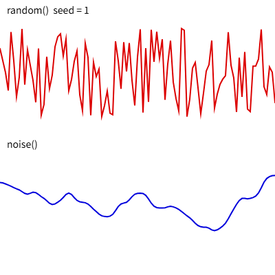

10. 乱数とノイズ
この章では、random() と noise() を使って、作品に偶然性や自然なゆらぎを加える方法を説明します。プログラムで作品を生成する ジェネラティブアート では、この 2 つの関数が欠かせません。
10.1. 乱数
random() は、呼び出すたびに異なる値を返します。引数によって返す値が変わります。
書き方 |
返す値 |
|---|---|
|
0 以上 1 未満の数 |
|
0 以上 |
|
|
|
配列からランダムに選んだ要素 |
返す値は整数ではなく小数です。整数が必要なときは、floor(random(6)) + 1（1〜6 の整数）のように floor() で切り捨てます。
randomSeed() で乱数の 種（シード）を固定すると、実行するたびに同じ乱数の列が得られます。気に入った結果を再現したいときや、不具合を調べるときに使います。
10.2. ノイズ
random() の値は、前に返した値と無関係に決まります。そのため、値を並べるとギザギザになり、雲の形や地形、ゆっくり漂う動きのような、自然で滑らかな変化は表現できません。
このような変化を表現するには noise() を使います。noise() は パーリンノイズ と呼ばれる値を返す関数で、次の性質があります。
返す値は 0 以上 1 以下である。
同じ引数に対しては、常に同じ値を返す。
引数が少し変わると、返す値も少しだけ変わる。
noise() を使うときは、引数を少しずつ変えながら呼び出します。引数の変化量（刻み幅）によって、変化の細かさが決まります。
刻み幅 |
変化の様子 |
|---|---|
0.005 程度 |
非常にゆっくり、なだらかに変化する。 |
0.01〜0.03 程度 |
適度な起伏がある。 |
0.1 以上 |
細かく変化し、乱数に近くなる。 |
noise(x, y) のように 2 つの引数を渡すと、平面上で滑らかに変化する値が得られます。地形や雲の模様を描くときに使います。乱数と同様に、noiseSeed() で種を固定できます。
10.3. ノイズで動かす
ノイズの引数に時間を使うと、ゆらゆらと漂うような動きを作れます。次のコードは、円を画面内でランダムに、しかし滑らかに動かします。
1function setup() {
2 createCanvas(400, 400);
3}
4
5function draw() {
6 background(255, 20); // 半透明の背景で軌跡を少し残す
7 const t = frameCount * 0.01;
8 const x = noise(t) * width;
9 const y = noise(t + 1000) * height; // x とは離れた位置のノイズを使う
10 circle(x, y, 20);
11}
8 行目と 9 行目で同じ t をそのまま使うと、x と y が同じ値になり、円は対角線上しか動きません。9 行目では引数に 1000 を加え、x とは無関係なノイズの値を使っています。
map() を使うと、ノイズの値を任意の範囲に変換できます。map(値, 元の最小値, 元の最大値, 新しい最小値, 新しい最大値) の形で使い、たとえば map(n, 0, 1, 100, 300) は 0〜1 の値 n を 100〜300 の範囲に変換します。
10.4. サンプル
random() と noise() の値を折れ線グラフにして比べるサンプルです。キャンバスをクリックすると、種を変えて描き直します。
1// random() と noise() の違いを比べるスケッチ
2// クリックするたびに種を変えて描き直す
3
4let seed = 1;
5
6function setup() {
7 createCanvas(400, 400);
8 noLoop(); // クリックされたときだけ描き直す
9}
10
11function draw() {
12 // 種を固定すると、毎回同じ乱数列とノイズが得られる
13 randomSeed(seed);
14 noiseSeed(seed);
15
16 background(255);
17 noFill();
18 strokeWeight(2);
19
20 // 上段：random() の値をつないだ折れ線（隣り合う値に関係がない）
21 stroke(220, 0, 0);
22 beginShape();
23 for (let x = 0; x <= width; x += 4) {
24 vertex(x, random(40, 170));
25 }
26 endShape();
27
28 // 下段：noise() の値をつないだ折れ線（隣り合う値が滑らかにつながる）
29 stroke(0, 0, 220);
30 beginShape();
31 for (let x = 0; x <= width; x += 4) {
32 const n = noise(x * 0.01); // 0〜1 の値が返る
33 vertex(x, map(n, 0, 1, 230, 390));
34 }
35 endShape();
36
37 noStroke();
38 fill(0);
39 textSize(14);
40 text(`random() seed = ${seed}`, 10, 20);
41 text('noise()', 10, 215);
42}
43
44function mousePressed() {
45 seed += 1;
46 redraw(); // noLoop() の状態で draw() を 1 回だけ実行する
47}
ダウンロード：
index.html、sketch.js


図 10.1 サンプルの実行結果
上段の random() の折れ線は激しく上下しますが、下段の noise() の折れ線は滑らかにつながっています。draw() の最初で種を設定しているため、同じ種であれば何度描き直しても同じ形になります。